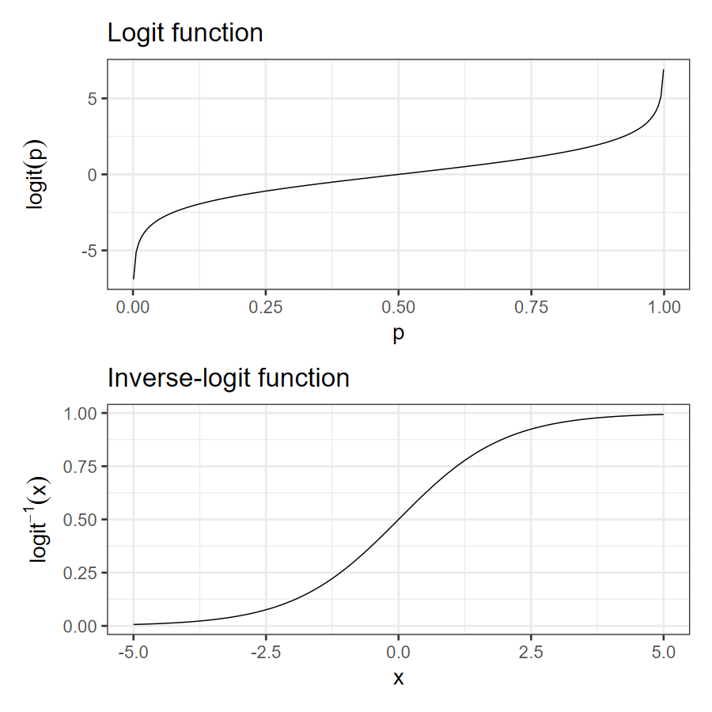
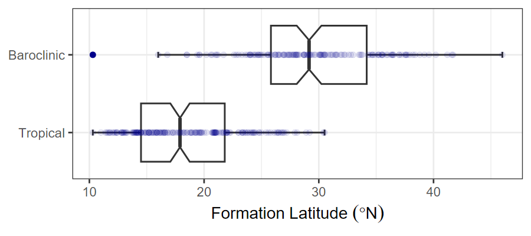
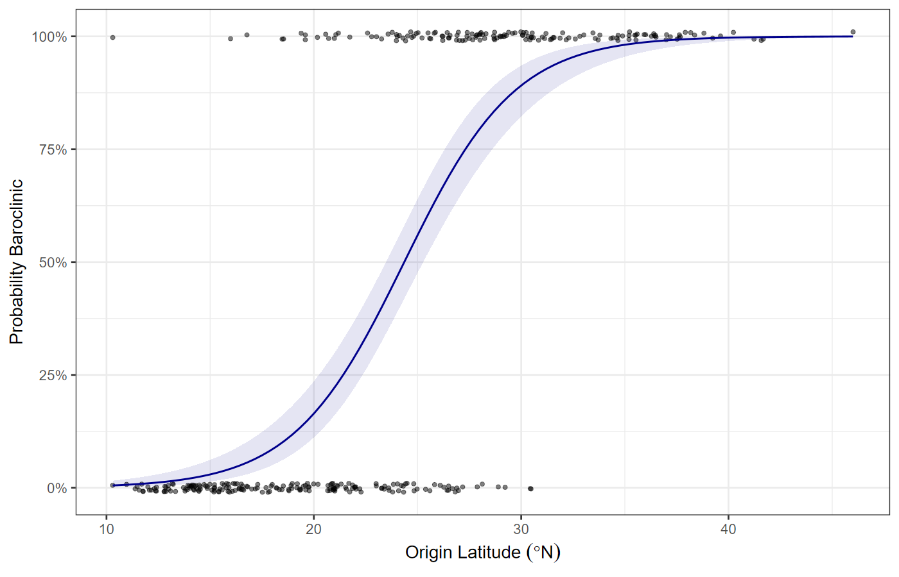
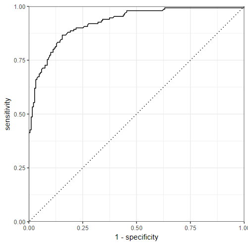
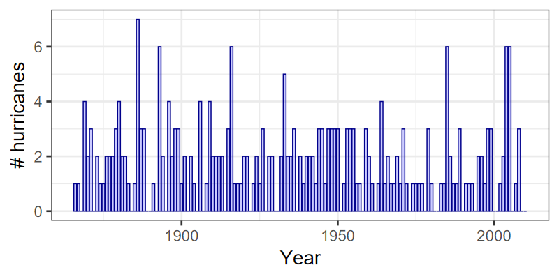
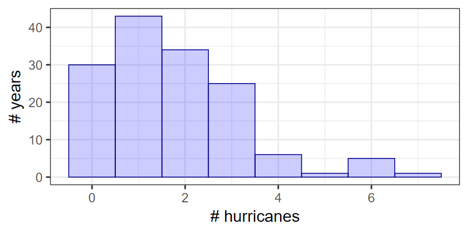
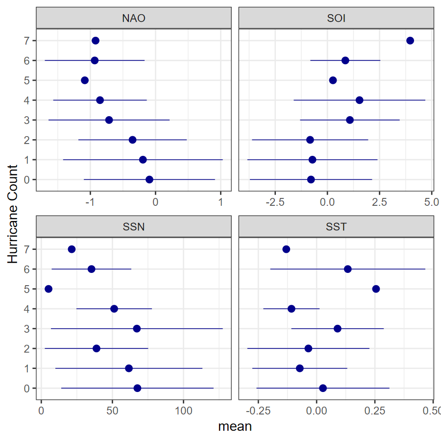

Linear regression:
\[ y = \beta_0 + \beta_1 x + \varepsilon \]
Count data:
\[ \begin{align} y \sim& \text{Binomial}(p(x), n) \\ \mathbb{P}(y = k | p(x), n) =& \left(n \atop k \right) p(x)^k (1 - p(x))^{n - k} \\ p(x) \sim& \mathcal{D}(\theta, x) \end{align} \]
We’re used to regression of the form
\[ p(x) = \beta_0 + \beta_1 x + \varepsilon \]
but how do we constrain \(p\) to be between 0 and 1?
Logit function:
\[ \begin{align} \mathrm{logit}(p) =& \ln \frac{p}{1 - p} \\ \mathrm{logit}^{-1}(x) =& \frac{e^x}{e^x + 1} \end{align} \]
Logistic regression:
\[ \begin{align} y \sim& \text{Binomial}(x, n) \\ z =& \beta_0 + \beta_1 x + \varepsilon \\ p =& \mathrm{logit}^{-1}(z) \end{align} \]
Logit function:
\[ \begin{align} \mathrm{logit}(p) =& \ln \frac{p}{1 - p} \\ \mathrm{logit}^{-1}(x) =& \frac{e^x}{e^x + 1} \end{align} \]
Logistic regression:
\[ \begin{align} y \sim& \text{Binomial}(x, n) \\ z =& \beta_0 + \beta_1 x + \varepsilon \\ p =& \mathrm{logit}^{-1}(z) \end{align} \]

Linear Regression Model:
\[ \begin{align} y_i =& \beta_0 + \sum{j = 1}^p \beta_j\: x_{i,j} + \varepsilon_i \\ E(Y | X) =& \beta_0 + \sum{j = 1}^p \beta_j\: x_{i,j} \end{align} \]
Examples:
| Distribution | Values | Link | Link function |
|---|---|---|---|
| Normal | \((-\infty, \infty)\) | Identity | \(g(\mu) = \mu\) |
| Gamma | \([0, \infty)\) | Negative inverse | \(g(\mu) = -1 / \mu\) |
| Poisson | 0, 1, 2, … | Log | \(g(\mu) = \ln(\mu)\) |
| Bernoulli | 0, 1 | Logit | \(g(\mu) = \ln \left( \frac{\mu}{1 - \mu} \right)\) |
| Binomial | 0, 1, …, N | Logit | \(g(\mu) = \ln \left( \frac{\mu}{N - \mu} \right)\) |
A data set for 337 hurricanes. The column Type is a
factor indicating whether the cyclone is tropical or baroclinic.
FirstLat gives the latitude at which the hurricane
formed.
## Rows: 337
## Columns: 10
## $ Name <chr> "NOTNAMED", "NOTNAMED", "NOTNAM…
## $ Year <dbl> 1944, 1944, 1944, 1944, 1944, 1…
## $ Type <fct> Baroclinic, Tropical, Tropical,…
## $ FirstLat <dbl> 30.2, 25.6, 14.2, 20.8, 20.0, 2…
## $ FirstLon <dbl> -76.1, -74.9, -65.2, -58.0, -84…
## $ MaxLat <dbl> 32.1, 31.0, 16.6, 26.3, 20.6, 3…
## $ MaxLon <dbl> -74.8, -78.1, -72.2, -72.3, -84…
## $ LastLat <dbl> 35.1, 32.6, 20.6, 42.1, 19.1, 5…
## $ LastLon <dbl> -69.2, -78.2, -88.5, -71.5, -93…
## $ MaxInt <dbl> 80, 80, 105, 120, 70, 85, 105, …Begin by plotting data

Make the model, using logistic regression with R’s “glm” engine for fitting the parameters:
recipe <- recipe(bh, Type ~ FirstLat)
model <- logistic_reg() |>
set_engine("glm", family = "binomial")
wflow <- workflow(recipe) |> add_model(model)
results <- wflow |> fit(data = bh)## # A tibble: 2 × 5
## term estimate std.error statistic p.value
## <chr> <dbl> <dbl> <dbl> <dbl>
## 1 (Intercept) -9.08 0.961 -9.45 3.50e-21
## 2 FirstLat 0.373 0.0395 9.45 3.49e-21
set.seed(12345)
# strata=Type ensures that each fold has a good balance of
# Tropical and Baroclinic cyclones.
k_fold <- vfold_cv(bh, 5, strata = Type)
control <- control_resamples(save_pred = TRUE)
results <- fit_resamples(wflow, k_fold, control = control)## Rows: 337
## Columns: 7
## $ .pred_class <fct> Baroclinic, Tropical, T…
## $ .pred_Tropical <dbl> 0.1500488, 0.8752090, 0…
## $ .pred_Baroclinic <dbl> 0.84995117, 0.12479104,…
## $ id <chr> "Fold1", "Fold1", "Fold…
## $ .row <int> 6, 10, 15, 16, 17, 19, …
## $ Type <fct> Baroclinic, Tropical, T…
## $ .config <chr> "Preprocessor1_Model1",…results |> collect_predictions() |>
roc_curve(truth = Type, .pred_Baroclinic,
event_level = "second") |>
autoplot() +
scale_x_continuous(expand = c(0,0)) +
scale_y_continuous(expand = c(0,0))
The area under the curve (AUC) measures how accurate the predictions are.
Here, we are going to study climatic influences on the number of hurricanes that make landfall in the US
First, load the data, with the number of hurricanes each year from 1866 to 2010
## Rows: 145
## Columns: 10
## $ Year <dbl> 1866, 1867, 1868, 1869, 1870, 1871,…
## $ All <dbl> 1, 1, 0, 4, 2, 3, 0, 2, 1, 1, 2, 2,…
## $ MUS <dbl> 0, 0, 0, 0, 0, 0, 0, 1, 0, 1, 0, 1,…
## $ G <dbl> 1, 1, 0, 2, 1, 0, 0, 0, 0, 1, 0, 1,…
## $ FL <dbl> 0, 0, 0, 0, 1, 2, 0, 2, 1, 0, 1, 2,…
## $ E <dbl> 0, 0, 0, 2, 0, 1, 0, 0, 1, 0, 1, 0,…
## $ NAO <dbl> -0.860, -1.775, 1.725, -1.345, 1.05…
## $ SOI <dbl> 0.2666667, -0.1333333, -4.0000000, …
## $ SST <dbl> -0.02873733, -0.19373733, -0.126737…
## $ SSN <dbl> 7.3, 9.8, 47.2, 80.6, 136.0, 80.3, …Plot hurricane frequency:



library(poissonreg)
rec <- recipe(hurricanes, All ~ SST + NAO + SOI + SSN)
mdl <- poisson_reg(engine = "glm")
wflow <- workflow(rec) |> add_model(mdl)## # A tibble: 5 × 5
## term estimate std.error statistic p.value
## <chr> <dbl> <dbl> <dbl> <dbl>
## 1 (Intercept) 0.595 0.103 5.76 0.00000000839
## 2 SST 0.229 0.255 0.897 0.370
## 3 NAO -0.167 0.0644 -2.59 0.00972
## 4 SOI 0.0619 0.0213 2.90 0.00371
## 5 SSN -0.00231 0.00137 -1.68 0.0928SST doesn’t make a significant contribution, so make a new model without SST
New model fit:
Test model performance with cross-validation
k_fold <- vfold_cv(hurricanes, 5)
control <- control_resamples(save_pred = TRUE)
results <- fit_resamples(wflow_new, k_fold,
control = control)## # A tibble: 2 × 6
## .metric .estimator mean n std_err .config
## <chr> <chr> <dbl> <int> <dbl> <chr>
## 1 rmse standard 1.46 5 0.122 Preproce…
## 2 rsq standard 0.128 5 0.0602 Preproce…Naïve model: Every year has the same forecast: the average number of hurricanes 1.7
RMSE for the naive model is